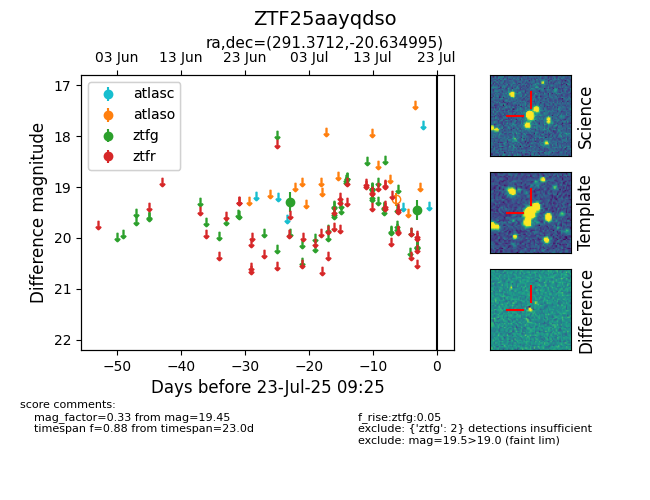

Target ZTF25aayqdso at 2025-07-23 12:37, see:
FINK: fink-portal.org/ZTF25aayqdso
Lasair: lasair-ztf.lsst.ac.uk/objects/ZTF25aayqdso
ALeRCE: alerce.online/object/ZTF25aayqdso
alt names
ZTF25aayqdso (ztf,fink)
coordinates:
equatorial (ra, dec) = (291.3712,-20.63499)
galactic (l, b) = (17.7884,-16.49742)
photometry
last atlaso=19.24, ztfg=19.45
1 atlaso, 2 ztfg detections
